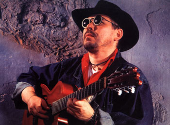

Официальный сайт Валерия Белинова - http://www.valbelin.com

Группа Belinov Blues Band была организована Валерием Белиновым 22 мая 1994 года на базе нового Джаз-клуба в Таврическом парке.
В первый состав вошли лучшие джазовые музыканты г.Санкт-Петербурга:
Группа Belinov Blues Band (BBB) является лучшим коллективом и одной из немногих групп, исполняющих музыку в стиле блюз.
За время существования BBB (более 2-х лет) этот ансамбль, состоящий из лучших джазовых музыкантов, приобрел широкую известность и авторитет среди поклонников джаза и любителей настоящего американского блюза в городе Санкт-Петербурге и за его пределами. Регулярно учавствуя в международных фестивалях города и страны, в сольных концертах, во многих джаз и арт-клубах, на радио и телевидении, съемках в кино, наконец, в течении долгого периода поддерживая постоянную деятельность "New Jazz Club" и "Jazz Filarmonic Hall", группа BBB обеспечила себе высокую профессиональную оценку среди истинных ценителей реально исполненной и блестяще представленной на сцене музыки в стилях "Blues" и "Rhythm & Blues".
В тщательно выверенной программе BBB вы услышите и увидите лучшие примеры блюзовых композиций таких всемирно известных гитаристов и вокалистов, как P.Green, L.Carlton, B.B.King, J.Brown, J.Hendrix, J.Lee Hooker и др., а также сочиненные оригинальные произведения в том же стиле, автором которых является Валерий Белинов.
Концерты группы BBB - всегда сюрприз. Это и демонстрация высочайшего уровня исполнения, единство стиля и участие в представлении солистов-инструменталистов в категории "special guest", и широкий ассортимент жанрово-оформленных блюзовых мелодий.
6 июня 1996 года произошла смена состава, в связи с отъездом на постоянное жительство в Германию постоянного партнера Валерия Белинова, басиста группы Тархова Олега.
В новый состав группы вошли: